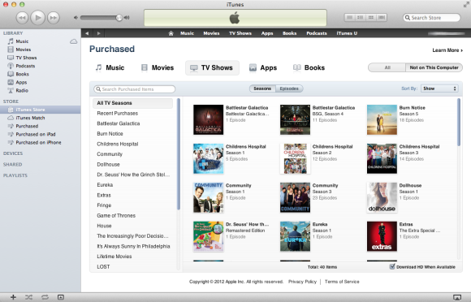
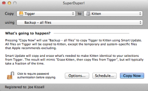

How to restore your data from the cloud
Online backups are a useful component of a well-balanced backup strategy. Whether you rely primarily on cloud storage for backups (see “ Backup Basics ”) or use the cloud to supplement local backups such as bootable duplicates (see “ Bulletproof Backups ”), it’s crucial to understand how you will go about restoring your data after disaster strikes.
Disaster is the operative word here. If you merely need to restore a few individual files or folders, usually that’s simple enough—typically you use either the backup client software installed on your Mac or the backup provider’s website to specify which versions of which files you want, click a button or two, and wait for the files to download. No big deal.
But what if your entire hard disk dies and needs replacing, or your Mac is stolen and you have to start over with a new one? Such situations require a different strategy, because your online backups almost certainly don’t include every single file on your Mac; and in any case, even with a fast broadband connection, you may be looking at days or weeks to restore whatever data you keep in the cloud.
One way or another, you must first get your Mac back to a state of basic functionality, and then—perhaps by stages—restore your crucial missing files from the cloud. How you go about that depends on what other backups (if any) you have available.
If you have no other backups
Let’s start with the least pleasant scenario: Your only backups are in the cloud, and you have no local copies of your data at all. You have to do more work and wait longer to get up and running; but if you backed up all your crucial files, you will return to a happy place in due time.
Set up OS X: Your first step is to make sure that your drive has OS X installed. New Macs, of course, come with OS X already installed. If you’ve had to replace a defective drive with a new, empty drive, you’ll need to install OS X on it before doing anything else.
If your Mac shipped with an older version of OS X that included physical installation media (a DVD, CD, or flash drive)—or if you planned ahead and made yourself a recovery volume using the OS X Recovery Disk Assistant —then just start from that media and run the installer. Newer Macs (those released in the past two years or so) have no separate OS X media in the box; instead, they rely on OS X Internet Recovery . Hold down Command-R as you restart the machine, and follow the prompts to redownload Lion or Mountain Lion from the Mac App Store and install it on the new disk.
Get your backup or sync software up and running: After getting your Mac working again, your next step is to download and install whatever cloud backup or sync software you used. Run the software and sign in with the same account you used previously.
What happens next depends on the type of software you used:
For sync software, such as
Dropbox
(
 ),
SpiderOak
(
), and
SugarSync
(
), you need only wait—all your synced files will download automatically in the background.
),
SpiderOak
(
), and
SugarSync
(
), you need only wait—all your synced files will download automatically in the background.
For backup software, such as Backblaze , CrashPlan ( ), or MozyHome , follow the instructions for restoring the latest copies of your backed-up files. (You might want to skip restoring backups of email, contacts, and calendars, as I'll discuss in a moment.) Restoration speed depends on the throughput of your broadband connection. If you find that it’s too slow for your needs, you can either try moving your Mac to a location with a faster connection or request that the cloud provider ship your data overnight on a hard drive, DVD, or flash drive (for an extra fee, naturally).
While you’re waiting for your files to download or arrive at your door, you can work on several additional restoration steps.
Reinstall your applications: Most cloud backup services don’t back up your apps. You’ll have to reinstall them from the Mac App Store ( Apple menu > App Store ), download them from the developers’ sites, or use original installation media to get all your apps back.
Redownload purchased media: Using iTunes, you can redownload previous purchases of media such as music, movies, TV shows, books, and iOS apps (which you may not have included in your online backups or syncs). And if you signed up for Apple’s $25-per-year iTunes Match service , you can download fresh copies of all your music tracks (even those not purchased from Apple).
Use Photo Stream to restore photos:
If you previously enabled
iCloud’s Photo Stream
feature, you can open
Aperture
(
) or
iPhoto
(
), make sure it’s still enabled (check the Photo Stream preference pane in either app), and sit back while up to 1000 of your most recent photos download to your Mac.
Sync email, contacts, and calendars: If you rely on cloud-based services for email, contacts, and calendars—particularly iCloud, Google, Exchange servers, and (for email only) other IMAP servers—getting your data back into apps like Mail, Contacts, and Calendar is usually as easy as signing in to your account(s) and waiting for the data to synchronize from the server to your Mac. It’s better to grab all this data directly from the server rather than restoring it from backups, because the server almost certainly has fresher and more current versions of all the data, and restoring from backups may result in irritating collisions with live server syncing.

If you have only a Time Machine backup
Let’s say you wisely supplemented your cloud-based syncing or backups with Time Machine (but have no other local backups). This means you can restore every single file on your disk, including OS X itself and all your applications, to their state at the last time Time Machine ran. You can do so even if you install a completely new, blank drive. In this case the smartest move is to start by restoring the Time Machine backup (see “ How to restore data from Time Machine ”), and then to use your cloud sync or backup software for any files that may have changed since your last Time Machine backup. (In all probability, there will be few if any of these.)
I should mention, however, that if you use
Dolly Drive
(
 ) to store your Time Machine backups in the cloud, restoring your whole disk over the Internet may be impractical (and it will certainly be very time-consuming). Dolly Drive recommends, as I do, that you also have a bootable duplicate (or “clone”) of your startup volume on a local hard disk, and that you restore that duplicate before downloading files from the cloud, as I'll cover in the next scenario.
) to store your Time Machine backups in the cloud, restoring your whole disk over the Internet may be impractical (and it will certainly be very time-consuming). Dolly Drive recommends, as I do, that you also have a bootable duplicate (or “clone”) of your startup volume on a local hard disk, and that you restore that duplicate before downloading files from the cloud, as I'll cover in the next scenario.
If you have a bootable duplicate

If, in addition to cloud backups, you made a bootable duplicate of your entire disk, restoring that first will give you the fastest path, by far, to complete data recovery. Attach the disk containing your duplicate to your Mac, and then restart the machine while holding down the Option key. Select the duplicate and press Return to start your Mac from that disk. Then run whatever app you used to create the duplicate, such as Shirt Pocket Software’s $28 SuperDuper or Bombich Software’s $40 Carbon Copy Cloner , to reverse the process. Select your duplicate as the source and your new, empty internal disk as the destination.
Within a few hours, the restoration should be complete. Use the Startup Disk pane of System Preferences to set your startup volume to be your internal disk, and restart. Your Mac should now be exactly as it was the last time you updated your duplicate, which, if you take my advice, will be no less often than once a week.
Now, all that remains is to download any files you backed up to the cloud since that duplicate was last updated. For syncing services such as Dropbox, you don’t have to do anything; the download just happens automatically in the background. For certain backup apps (notably CrashPlan), unfortunately there’s no automated way to say “restore all files modified since date x .” You may have to either manually select the files you want to restore or restore everything, which will involve overwriting many files with identical copies from the cloud. That will, however, eventually get your disk back to where it was.

 Amazon Shop buttons are programmatically attached to all reviews, regardless of products' final review scores. Our parent company, IDG, receives advertisement revenue for shopping activity generated by the links. Because the buttons are attached programmatically, they should not be interpreted as editorial endorsements.
Amazon Shop buttons are programmatically attached to all reviews, regardless of products' final review scores. Our parent company, IDG, receives advertisement revenue for shopping activity generated by the links. Because the buttons are attached programmatically, they should not be interpreted as editorial endorsements.